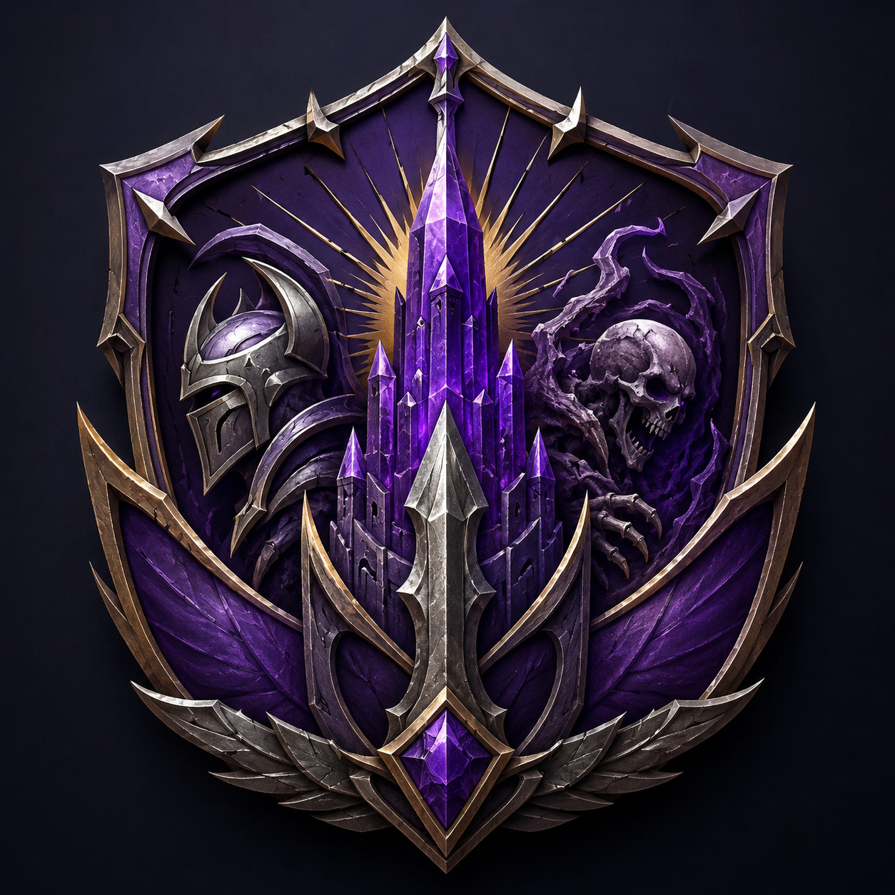

Кампания «Аметистовый дозор»

Мастер: Сказочник (DS: mozanultra)
Система: D&D 5e + HB
Сеттинг: Героическое Фэнтези, Выживание, Развитие лагеря, Исследования, Эпичные Дикие Земли, Некроманты, Маг-панк
Длительность: Несколько сюжетных арок, разбитых на отдельные истории (Год?)
Дата начала кампании: 17 июля 2026
Данное приключение является продолжением кампании, известной как Пепельная Гора. В кампании могут участвовать все желающие, как новенькие, так и старые игроки. Можно как использовать старых персонажей, так и создать новых.
В процессе игры вы будете разделены на группы, однако эти группы
могут перемешиваться и взаимодействовать друг с другом.
Мест во время одной сессии: не более 5 человек.
Полезные ссылки:
- dnd.su — Русскоязычный фанатский вики-форум по D&D 5/5e
- Foundry Lightweight Client (FLC) — Браузер для игры, оптимизированный для Foundry VTT
- tokenstamp — Инструмент для создания токенов персонажей